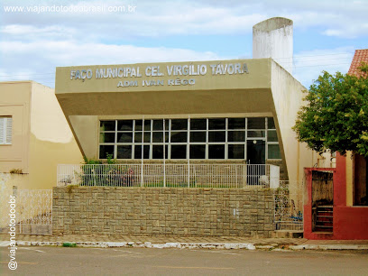

Informações técnicas sobre relevo, população, IDH etc.
| INFORMAÇÕES | |
|---|---|
| Municípios limítrofes | Norte: Pacujá, Cariré Leste: Varjota Sul: Ipu, Pires Ferreira Oeste; Graça, Guaraciaba do Norte |
| Fundação | 25 de setembro de 1923 (97 anos) |
| Área total | 383,119 km² |
| Clima | Semi-Árido |
| IDH | 0,653 — médio |
| PIB | R$ 65 469,343 mil |
| INFORMAÇÕES TERRITORIAIS | |
|---|---|
| Número de habitantes | 18.491 habitantes |
| Superfície de Reriutaba |
38 332 hectares
383,32 km² (148,00 sq mi) |
| Densidade populacional | 48,3 hab./km² |
| Altitude de Reriutaba | 167 metros de altitude |
| Coordenadas geográficas decimais |
Latitude:
-4.13441
Longitude: -40.5686 |
| Coordenadas geográficas sexagesimais | Latitude: 4° 8' 4'' Sul , Longitude: 40° 34' 7'' Oeste |
| INFORMAÇÕES DO MUNICÍPIO | |
|---|---|
| Endereço da Prefeitura Municipal de Reriutaba |
Reriutaba
Prefeitura de Reriutaba
Rua Dr.Osvaldo Lemos, 176 RERIUTABA - CE, 62260-000 Brasil Work +55 88 3637-1136 Fax (88) 3637-1136 |
| Telefone da prefeitura |
(88) 3637-2052
Internacional: +55 88 3637-2052 |
| Fax |
(88) 3637-1136
Internacional: +55 88 3637-1136 |
| Endereço eletrônico da prefeitura |
Não disponível
|
| Site oficial do município | reriutaba.ce.gov.br |
| INFORMAÇÕES DO ADMINISTRATIVAS | ||
|---|---|---|
| Prefeito de Reriutaba | PEDRO HUMBERTO COELHO MARQUES | |
| Partido politico | PSB | |
| INFORMAÇÕES DE TRANSPORTE | |
|---|---|
| Transporte urbano disponível | - |
| Aeroporto |
Aeroporto Internacional Pinto Martins
139.5 km
Aeroporto de Sobral
56.5 km
Aeroporto Internacional Prefeito Dr.João Silva Filho
189.2 km
|
| INFORMAÇÕES DE DISTÂNCIA A OUTRAS CIDADES | ||
|---|---|---|
| São Paulo : 2258 km | Rio de Janeiro : 2109 km | Brasília : 1526 km |
| Salvador : 1009 km | Belo Horizonte : 1784 km | Manaus : 2165 km |
| Curitiba : 2546 km | Fortaleza : 230 km mais perto | Goiânia : 1688 km |
| Belém : 931 km | Porto Alegre : 3093 km | Guarulhos : 2237 km |
| Campinas : 2204 km | São Luís : 452 km | Recife : 766 km |
| Distância calculada em linha reta! | ||
Conheça mais sobre a história da Reriutaba.
O nome Reriutaba é em alusão aos índios Reriús, antigos habitantes da região.
Segundo a lenda popular e sustentado em poucos registros, a história de Reriutaba começa quando os índios reriús decidem se estabelecer na região. Os reriús eram nômades do grupo tapuia e provavelmente habitavam a região que vai desde as margens do rio Acaraú até a Chapada da Ibiapaba. Acredita se que sua extinção se deve aos conflitos com os índios tabajaras. Reriús significa "beber água em concha" e taba "moradia indígena”. O município se encontra em uma depressão.
Já a sua história política inicia em 1923 quando o coronel José Teodoro Soares é nomeado primeiro prefeito, sendo desmembrada do município de Guaraciaba do Norte e adotando o nome de Santa Cruz.
No dia 25 de setembro de 1923 com a posse de Teodoro Soares, como seu primeiro prefeito.
O decreto de 193, de 20 de maio de 1931, suprimiu a autonomia de Santa Cruz, que foi definitivamente restaurada no dia 3 de maio de 1935, conforme o decreto de nº 1.540.
A vila de Santa Cruz foi elevada à categoria de cidade pelo decreto de lei de nº 448, de 20 de dezembro de 1938. A denomina atual de Reriutaba, que os índios que primitivamente habitavam no Alto do Acará, foi oficializada pelo decreto de nº 1.114, de 30 de dezembro de 1943.
A paróquia local de Reriutaba foi criada em 1936, sob a proteção de Nossa Senhora do Perpétuo Socorro. A cisão mais recente se dá quando o distrito de Varjota separa-se politicamente em 1984.
Saiba mais sobre os melhores lugares e o que fazer em Reriutaba.
Estação Ferroviária de Reriutaba-CE
Estádio Silveirão
Prefeitura de Reriutaba-CE
Praça da Igreja matriz de Reriutaba-CE
Veja como chegar nos melhores pontos de Reriutaba.